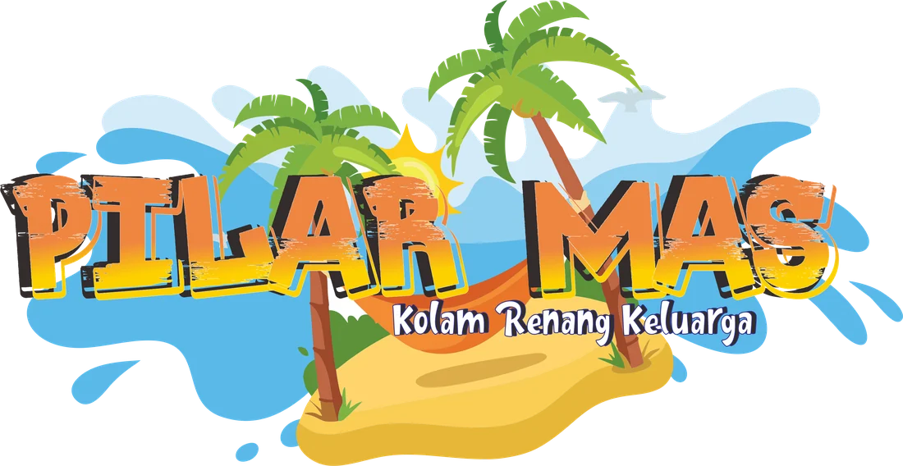
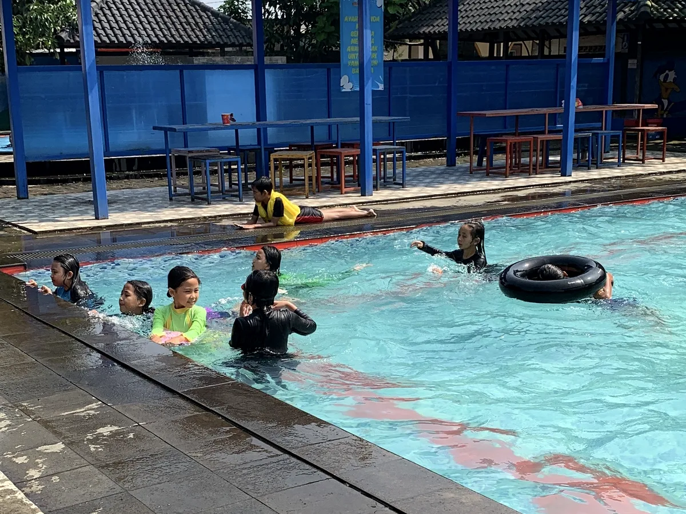
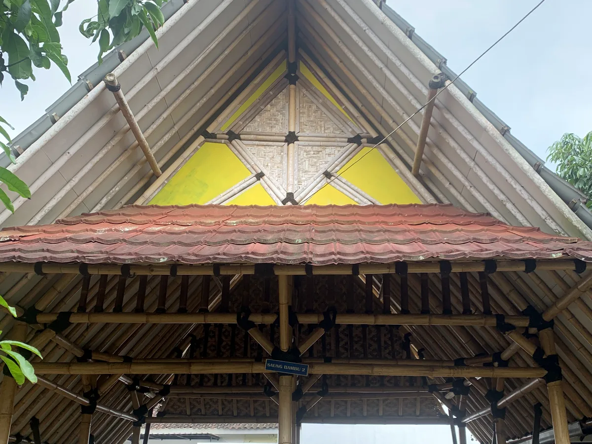
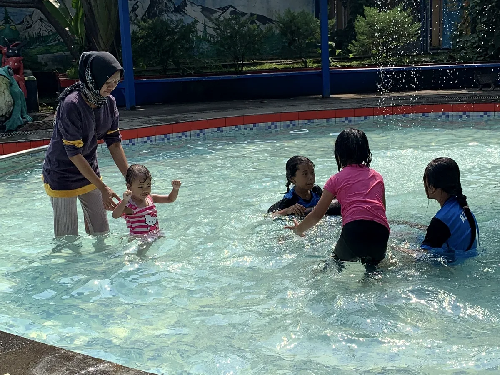
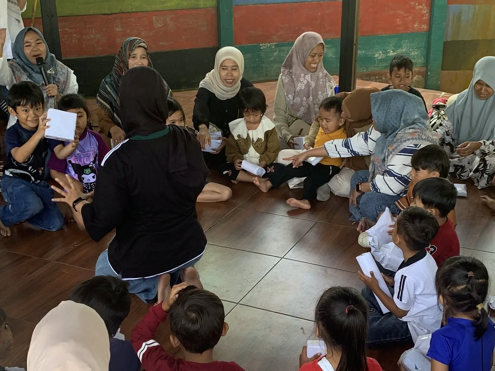
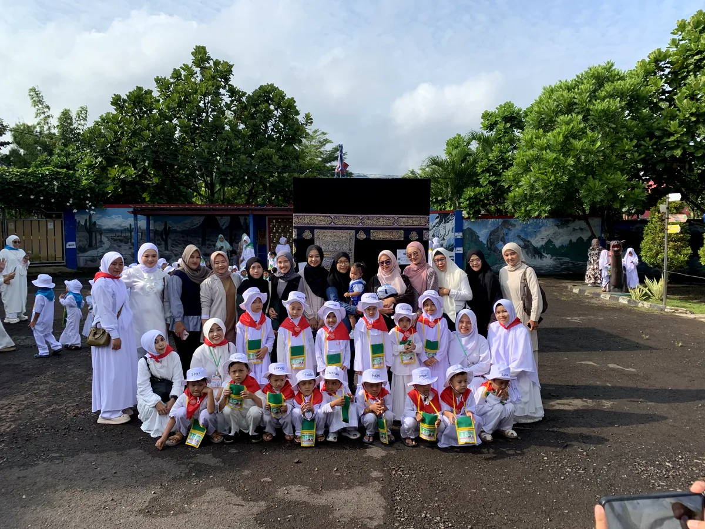

Tiket harian
Akses kolam dewasa dan kolam anak. Buka Senin–Kamis 09.00–17.00, Sabtu–Minggu 08.00–17.00. Jumat libur.
Rp 20.000, dewasa dan anak
Tanya admin kolamKolam renang keluarga, les renang, dan tempat acara.
Les bahasa Inggris untuk anak dan remaja.
Air minum galon, diantar ke tempat Anda.
Pelatihan perhotelan dan penempatan kerja.

Beranda / Edu Wisata Kolam Renang
Datang untuk berenang bersama keluarga, ikut les renang, atau pesan tempat untuk ulang tahun, arisan, gathering, dan kunjungan sekolah.
Untuk keluarga yang ingin berenang kapan saja.
Akses kolam dewasa dan kolam anak. Buka Senin–Kamis 09.00–17.00, Sabtu–Minggu 08.00–17.00. Jumat libur.
Rp 20.000, dewasa dan anak
Tanya admin kolamBayar 8 kali, berenang 10 kali. Berlaku 3 bulan dan bisa dipakai bergantian dalam satu keluarga.
Harga 8 tiket
Beli kartu langganan
Kolam ditutup untuk umum selama 2 sampai 3 jam, khusus keluarga atau rombongan Anda, di luar jam ramai.
Mulai Rp 1.500.000 per sesi
Cek tanggalSemua ada di satu kawasan, jadi keluarga bisa seharian di sini.




Anak naik level setelah lulus tes, biasanya setiap 2 sampai 3 bulan, dan mendapat sertifikat.
Satu sesi percobaan dan tes level, supaya anak masuk kelas yang tepat.
Rp 35.000
Dipotong dari biaya bulan pertama kalau lanjut
Daftar onlineUsia 3 sampai 5 tahun bersama orang tua. Belajar tidak takut air sambil bermain.
Mulai Rp 250.000/bulan
4 sampai 8 pertemuan
Tanya jadwal
Paling diminatiUsia 5 sampai 12 tahun, 4 sampai 6 anak per pelatih, ada rapor kemajuan.
Mulai Rp 250.000/bulan
8 pertemuan
Tanya jadwalSatu atau dua orang per pelatih, untuk anak atau dewasa yang ingin cepat bisa.
Mulai Rp 400.000/bulan
4 atau 8 pertemuan
Tanya jadwalUntuk orang tua yang belum bisa berenang. Jadwal pagi di hari kerja.
Mulai Rp 300.000/bulan
8 pertemuan
Tanya jadwalPelatih wanita dan jam khusus, nyaman untuk ibu-ibu dan muslimah.
Mulai Rp 300.000/bulan
8 pertemuan
Tanya jadwalLatihan teknik empat gaya dan persiapan lomba untuk anak yang sudah mahir.
Mulai Rp 400.000/bulan
Tanya seleksiKerja sama dengan SD dan SMP. Pelatih dan lifeguard dari kami, jadwal hari kerja.
Mulai Rp 15.000/siswa per pertemuan
Kontrak per semester
Ajukan kerja samaIsi formulir pendaftaran, lalu admin menghubungi Anda untuk tes level dan jadwal kelas.
Untuk 20 anak, sudah termasuk tiket renang, dekor, snack, MC, dan games air.
Pesta simpel di pinggir kolam, boleh bawa kue sendiri. Senin sampai Kamis, 2 jam.
Rp 40.000/anak
Lihat isi paketDitambah nasi box, kue 18 cm, dekor tema, goodie bag, dan gazebo. 2,5 jam.
Rp 85.000/anak
Lihat isi paketDekor tema penuh, kue karakter, badut atau MC profesional, dan foto 1 jam. 3 jam.
Rp 150.000/anak
Lihat isi paketMama ngobrol dengan tenang, anak-anak berenang aman dengan lifeguard yang berjaga.
Hari kerjaGazebo 3 jam di hari kerja, pukul 09.00 sampai 13.00. Teh, kopi, snack, nasi box, dan anak boleh berenang.
Rp 45.000/orang
Minimal 15 orang
Pesan tempat arisanArisan santai ditambah 30 menit senam air dipandu instruktur.
Rp 65.000/orang
Minimal 15 orang
Pesan tempat arisanArea semi-privat 4 jam, tiket renang, prasmanan, dan sound sederhana.
Mulai Rp 75.000/orang
Minimal 25 orang
Pesan tempatTempat, konsumsi, meja, tenda, dan MC sesuai kebutuhan acara.
Mulai Rp 3.000.000 per acara
Konsultasi acaraUntuk kantor, pabrik, komunitas usaha, hobi, dan majelis taklim.
Renang keluarga karyawan, lomba air, doorprize, prasmanan, dan MC.
Mulai Rp 75.000/orang
Minimal 50 orang
Minta penawaran
Area 3 jam, snack atau nasi box, sound, dan renang bebas.
Mulai Rp 50.000/orang
Minimal 20 orang
Pesan tempatJadwal khusus, konsumsi, dan waktu salat yang sudah diatur.
Mulai Rp 45.000/orang
Pesan tempatLomba antar-sekolah dan komunitas yang diadakan Pilarmas. Terbuka untuk sponsor.
Pendaftaran mulai Rp 50.000 per nomor
Info lomba dan sponsorJadwal Senin sampai Kamis, untuk TK, SD, dan SMP.
Hanya di PilarmasSatu hari kunjungan dengan tiga pos belajar:
Mulai Rp 45.000/siswa
Minimal 30 siswa, termasuk snack dan sertifikat
Ajukan jadwal kunjungan
Kegiatan bebas sekolah di area Pilarmas, ditutup dengan berenang.
Mulai Rp 30.000/siswa
Ajukan jadwalTempat, dekor, sound, konsumsi, dan renang setelah acara.
Mulai Rp 3.000.000 per acara
Konsultasi acaraLima hari saat libur sekolah: renang pagi, bahasa Inggris bersama HD Star, dan games.
Mulai Rp 350.000/anak
Juni sampai Juli, dan Desember
Daftar campLomba air untuk anak dan keluarga.
Tanya biaya pendaftaran
Setiap Agustus
Info lombaPaket kumpul keluarga besar dan kantor setelah Lebaran.
Mulai Rp 75.000/orang
Bulan Syawal
Pesan tempatKunjungan sekolah, acara komunitas, dan liburan keluarga yang pernah berlangsung di Pilarmas. Ketuk foto untuk memperbesar.
Senin sampai Kamis pukul 09.00–17.00, Sabtu dan Minggu pukul 08.00–17.00. Hari Jumat kolam libur. Saat libur panjang, cek dulu ke admin.
Kolam Renang Pilar Mas ada di Baros, Kota Sukabumi, Jawa Barat 43161. Cari "Kolam Renang Pilar Mas" di Google Maps.
Ada. Kolam anak terpisah dari kolam dewasa, dan lifeguard berjaga selama jam buka.
Ya. Anak yang berenang tetap wajib didampingi orang tua atau pendamping dewasa.
Kirim tanggal, jenis acara, dan jumlah peserta ke admin. Tanggal dikunci setelah DP 50%.